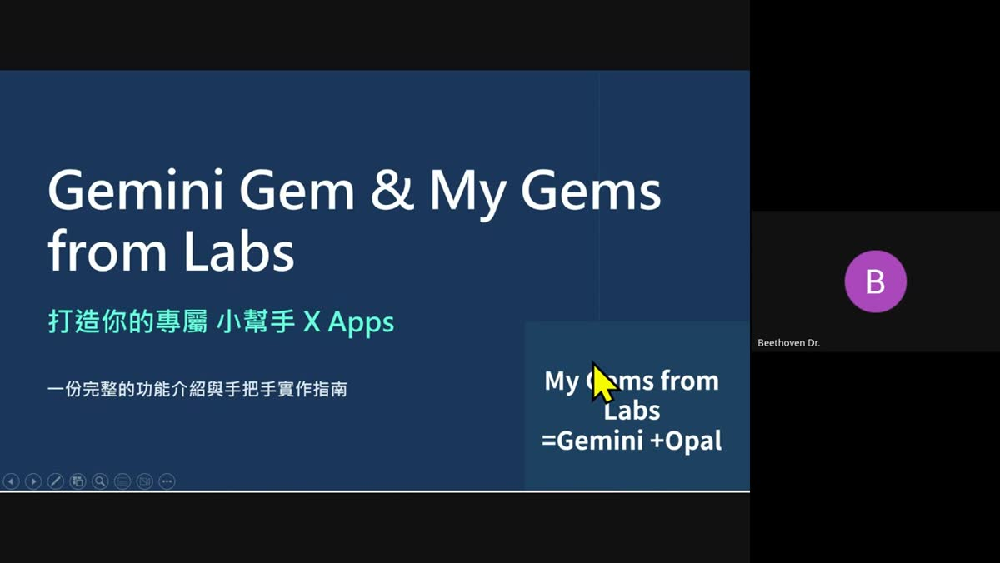
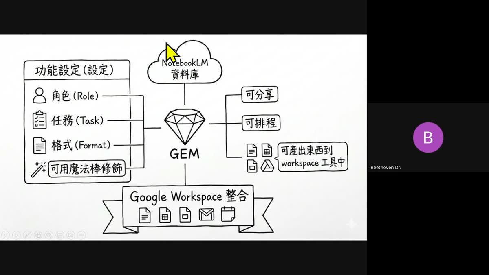
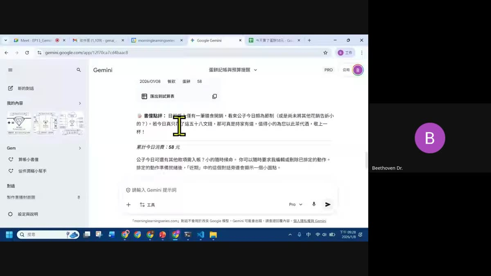
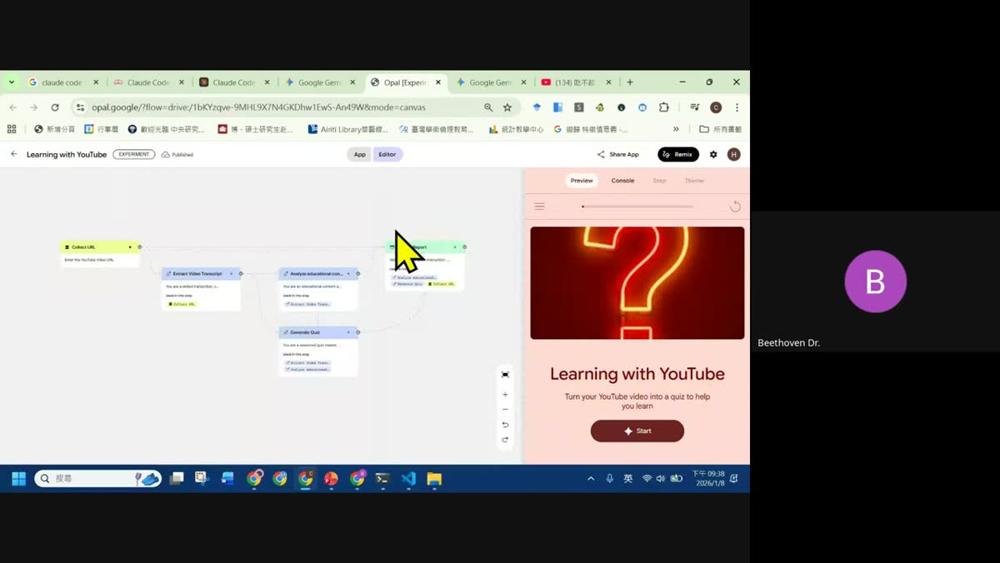
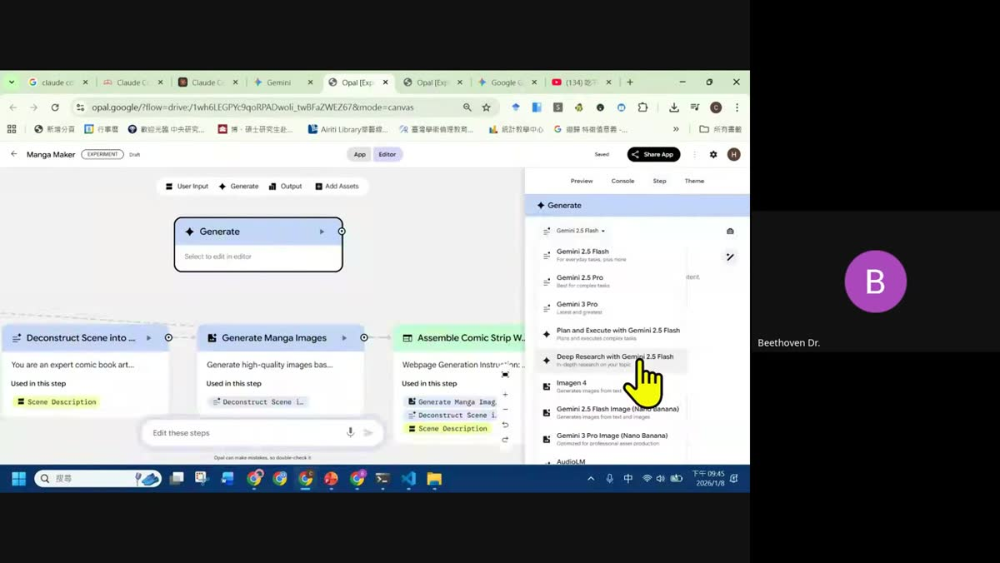
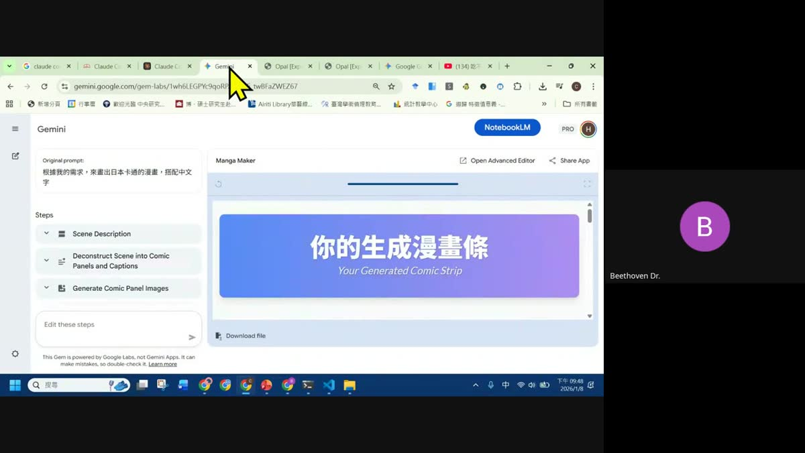
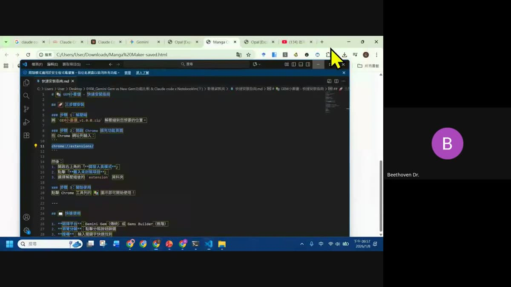
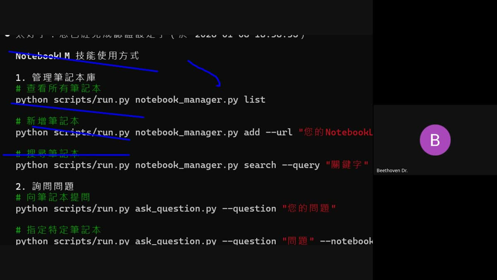
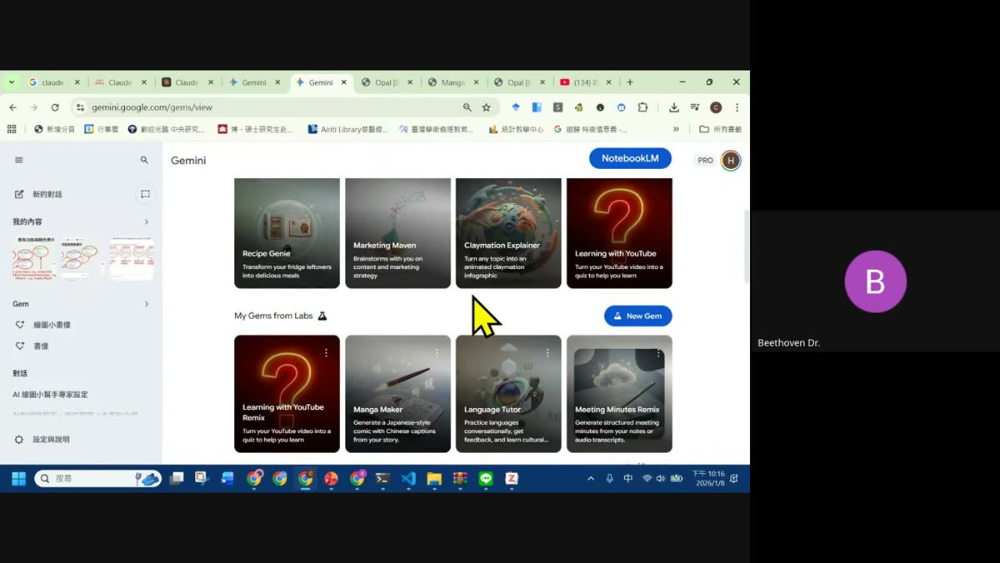

0. 課程資訊與教材
| 課程名稱 | EP13_Gemini Gem vs New Gem 功能比較 & Claude code x Notebooklm(下) |
|---|---|
| 頻道 | 生成式 AI 應用電台・晨學講堂 |
| 直播日期 | 2026/01/08（四）晚上 9:00–10:19 |
| 教材 | 本集資料夾內只有錄影檔，沒有簡報 pptx，也沒有課堂筆記 md；老師全程直接分享螢幕操作 Gemini、Opal、Chrome 擴充功能與 Claude Code 終端機 |
| 一句話先懂 | 傳統 Gem 是「單一提示詞打造的專案機器人」；New Gem（Gems from Labs）是「Gemini + Opal，把單一提示詞升級成多步驟工作流 App」；兩者都可以掛 NotebookLM 當知識庫，New Gem 的 NotebookLM 節點正在開發中。 |
⚠️ 誠實聲明：本集 Google Drive 資料夾內沒有簡報、沒有課堂筆記，本頁內容整理自完整逐字稿轉寫（1,934 段、約 6.8 萬字）與每 20 秒一張、共 217 張畫面截圖的逐格判讀，並非推測內容。文中出現的操作介面截圖皆為當天直播畫面實拍。
1. 傳統 Gem 完整回顧：角色・任務・格式・NotebookLM 掛載
開場先幫大家把「傳統 Gem」的邏輯講清楚，再進入新功能才不會混。

找到 Gem 入口
- 網址 gemini.google.com/gems/view，左側側邊欄「Gem」。不用付費就有這個功能；公司版／教育版 Gemini 可能還沒開放新版介面，這時改用一般個人 Google 帳號登入即可看到。
- 畫面會分上下兩塊：上面是新的（New / Gems from Labs），下面是舊的（傳統 Gem）；老師先講舊的，因為舊功能其實還在滾動更新，且是理解新功能的基礎。

建立一個 Gem 要填什麼
- 名稱：自由命名你的專案機器人，例如「繪圖小書僮」「算帳小書僮」。
- 說明：只是給自己看的提醒文字，不會影響專案功能本身。
- 使用說明（系統提示詞）：核心中的核心。老師強調萬用寫法＝角色（Role）＋任務（Task）＋背景脈絡＋格式（Format），先告訴他要扮演什麼身份、要完成什麼事、需要哪些背景脈絡與輸出格式。
- 魔法棒（✨）：寫完提示詞後點一下，Gemini 會幫你把提示詞潤飾得更清楚、更容易讓 AI 扮演到位——老師示範時每次寫完都會按這支「筆」再讓它順一次。
💡 老師的實際下 Prompt 習慣：不是自己憑空寫，而是先把「角色/任務/背景/格式」這套黃金公式的範例圖片上傳給 Gemini，直接說「根據上傳的圖片，寫出這個〇〇小幫手的指令」，讓 AI 幫你依公式產生完整系統提示詞，再貼進「使用說明」欄位、按魔法棒潤飾一次。
掛載 NotebookLM 當知識庫
- 以前只能上傳檔案（PDF／PPT／Word），最多 10 個檔案；現在建議改成直接掛 NotebookLM 筆記本，同樣最多可掛 10 本筆記本，但每本筆記本內部可再放非常多份資料——付費版每本筆記本可放 300 個來源檔案，免費版 50 個，等於資料量是以前的數十倍。
- 掛上 NotebookLM 之後，Gem 讀取的是整本筆記本，無法只挑筆記本裡的某一份資料；資料量太大時 Gem 回應速度會變慢，老師建議把 NotebookLM 內的資料先整理精簡再掛。
- 好處：NotebookLM 資料庫本身持續在更新（滾動式增加來源），Gem 的背景知識也會跟著同步更新，不用每次重新上傳檔案。
分享、排程、跨 Workspace 呼叫
- 可分享：建好的 Gem 只要對方有 Google 帳號就能使用你分享的連結，直接沿用你設定好的角色與 NotebookLM 資料。
- 可排程：可以要求 Gem「偵測到關鍵字就做某件事」（例如偵測到「記帳」就自動整理成表格），也可以設定固定時間執行（例如每天 17:30 自動彙整、寄到 Gmail 或加進 Google 待辦提醒）。
- 可產出到 Workspace 工具：能直接把結果寫進 Google 試算表、Google 日曆、Gmail 草稿、Google 文件等，在「應用程式」設定頁勾選要串接的服務即可。
- 反向呼叫：Gmail／Sheets／Docs／Slides 側邊欄的 Gemini 圖示，未來（部分帳號已開始）可以直接切換成你自訂設定過的 Gem，而不是只能用通用版 Gemini side panel——老師展示切換選單，但坦言這功能目前逐步推播中，不是每個帳號都已經有。
🆚 老師隨口比較：ChatGPT 的「專案功能」可以直接串 Notion、也能把結果直接寄出（例如寄到 Notion），開放程度較高；Google 生態系目前比較封閉，但整個 Google Workspace（Gmail／Sheets／Docs／Calendar）內部串接得非常深，各有取捨。
2. 實戰示範：繪圖小幫手 & 算帳小書僮
兩個傳統 Gem 的真實 Demo，跟著老師的步驟做一次就能複製。
繪圖小幫手：用「黃金公式」讓 AI 幫你寫提示詞
- 新增 Gem，命名「繪圖小幫手」。
- 把畫有「角色／任務／背景／格式」四要素的黃金公式圖片上傳給 Gemini。
- 下指令：「根據上傳的圖片，寫出這個繪圖小幫手的指令」，讓 AI 產生完整系統提示詞。
- 把產生的提示詞貼進「使用說明」欄位，點魔法棒（✨）潤飾一次。
- 存檔，測試「請幫我畫一張〇〇」。
算帳小書僮：人設 + 自動記帳 + 排程回報

- 人設設計：老師要求這個 Gem 扮演「古代寄帳的書僮」，回話會用「公子今日頗為節制」這類古風調侃語氣——示範人設可以帶個性、帶幽默感，不是只有制式輸出。
- 自動延伸動作：告訴它「收到記帳訊息時要做什麼事」，它就能把記帳結果直接匯出到 Google 試算表（點「匯出到試算表」按鈕，資料自動寫入日期／類別／項目／金額欄位）。
- 排程回報：老師設定「只要訊息裡出現『記帳』關鍵字」就觸發整理動作，並額外設定每天固定時間（例如 17:30）自動彙整當日花費、寄到 Gmail 或寫進 Google 待辦提醒。
- 同樣可以在其他 Google 服務的側邊欄叫出這個「算帳小書僮」的人設（若帳號已開放此功能），不必每次重新輸入指令。
「他不只是回答，還會用你設計的人設跟你互動。」
—— 老師示範算帳小書僮時的重點提醒
3. New Gem 是什麼：Gemini + Opal 全新工作流引擎
把「單一提示詞」升級成「階段式多步驟 App」。
- 核心公式：My Gems from Labs = 原本的 Gemini Gem + Opal。Opal 是 Google 內部的視覺化工作流工具，概念上有點像 n8n，但完全長在 Google 生態系裡。
- 傳統 Gem 的「使用說明」是單一段落的角色／任務／格式；New Gem 則是階段式（多步驟）——每一個步驟各自有自己的任務與提示詞，一步接一步跑完整套流程。
- 內建共 15 個現成範本，首頁常駐 4 個：考試小幫手、拍照剩菜變食譜、會議紀錄整理、求職履歷審查（Resume Reviewer）；其餘涵蓋行銷、SEO、學習等主題，可自行點開瀏覽。
實測：Learning with YouTube（YouTube 影片變測驗）
- 貼上任意 YouTube 影片網址（老師示範用一則新聞影片，沒有字幕也可以讀，NotebookLM 底層技術會自動處理）。
- Step 1：擷取影片逐字稿（把聲音轉成文字）。
- Step 2：分析教育相關性（Analyze educational content）。
- Step 3：產生測驗題（Generate Quiz）。
- Step 4：輸出完整報告。

💡 老師教的顏色判讀口訣：黃色＝資料輸入、中間＝AI 在運作（生成節點）、最後＝輸出。用 input → process → output 的邏輯看這張工作流圖，馬上就能看懂。
模型選擇：不同任務要配不同模型

每個步驟節點都可以各自指定要用哪個模型：需要文字理解用 Gemini Flash/Pro，需要深度查證用 Deep Research，需要生成圖片則一定要選圖像生成模型（如 Nano Banana／Imagen），選錯模型會直接導致該步驟失敗或產出空白——這個坑在下一節「Manga Maker」實戰會親眼示範。
發布與再利用
- Share App：完成的 App 可以切換「Public」公開分享，任何人都能透過連結使用你設計好的完整流程；分享出去不會外流你的資料或 API，對方要用同樣功能仍需要自己的付費額度。
- Remix：看到別人做好、公開分享的 App，可以點 Remix把它複製成你自己的一份再繼續編輯，不會動到對方原始版本——這也是老師示範「YouTube Remix」時用來快速修改別人模板的方法。
- Download：跑完的成果可以直接下載成 HTML 檔，方便交付或後續加工。
4. 實戰：從零打造 Manga Maker（自訂 New Gem）
不用範本，直接用一句中文需求叫 AI 幫你規劃整套工作流。
- 進到「New」畫面，用中文輸入需求：「根據我的需求，來畫出日本卡通的漫畫，搭配中文字」。
- Gemini 自動拆解成三個階段：Deconstruct Scene into Comic Panels and Captions（把故事拆成分鏡與字幕）→ Generate Comic Panel Images（生成每格漫畫圖）→ Assemble Comic Strip Webpage（組成網頁）。
- 輸入一句簡單故事測試：「天氣很冷，然後去吃雙淇淋」，按開始執行。
⚠️ 真實踩坑實錄：第一次執行完，圖片沒有正常生成、中文字也跑不出來。老師當場排查發現原因是「Generate」節點選錯了模型（用了不支援穩定生圖的 2.5 Flash）。解法：進 Advanced Editor 找到該節點，把模型換成 3.0 Imagen / Nano Banana 系列的圖像生成模型，重新執行後圖片與中文字就正常了。

用自然語言微調流程
- 不用手動改節點，直接在對話框打字：例如「我的步驟裡面要有一個步驟是：產生的內容請都用中文」「加入翻譯成繁體中文的需求」，Opal 會自動幫你把這個步驟寫進工作流。
- 兩種修改層級：簡單調整（加減步驟、要求輸出語言／格式）在左側對話框用講的就能改；精確設定（例如指定模型、調整節點連線）一定要進 Advanced Editor（進階編輯器）手動點選。
- 目前 New Gem 要讀外部資料還是以文字／Google 雲端資料夾為主；老師明確提到「未來會再多一個叫做 NotebookLM 的節點，就可以直接串了」——NotebookLM 節點尚未上線，現階段變通做法是開一個 Google 雲端資料夾把資料放進去再串接。
5. 私房外掛：GEM小書僮 Chrome 擴充功能安裝實戰
老師自己開發的 Chrome 擴充功能，一鍵把分類好的提示詞灌進 Gemini Gem 或 Gems from Labs。
- 功能定位：「一鍵擷取分類、主題不同的 prompts，來訓練 Gemini Gem（傳統）或 Gems Builder（進階）」——把老師整理好的各類系統提示詞（角色／任務／情境／格式）直接一鍵貼進新增 Gem 的欄位，不用自己手打。
- 目前有三種版本：一般版本（基礎 Prompt）、學術版（文獻收集／篩選／批判／整理／數據更新的完整流程 Prompt）、專案功能版（針對 Gem／New Gem 設計）。

三步驟安裝
- 解壓縮：把
GEM小書僮_v1.x.x.zip解壓縮到你想要的位置，變成一個資料夾。 - 開啟 Chrome 擴充功能頁面：網址列輸入
chrome://extensions/，打開右上角「開發人員模式」，點「載入未封裝項目」，選擇剛剛解壓縮出來的extension資料夾。 - 開始使用：點擊 Chrome 工具列的 💎 圖示（若沒看到，點右上角拼圖圖示「擴充功能」，把它釘選出來）即可開始使用。
快速使用
- 選擇平台：Gemini Gem（傳統）或 Gems Builder（進階）。
- 瀏覽分類：點分類按鈕篩選提示詞主題，例如「概念解釋器」（示範用「解釋量子糾纏」為例，會自動套用角色／任務／情境／格式四段式提示詞）、教學計畫等。
- 搜尋：輸入關鍵字快速找到你要的提示詞。
- 用完之後這個小提醒視窗會一直彈出，老師建議安裝完就可以先關掉提醒，之後要用再打開。
💡 分發方式：老師把安裝包放進課程 LINE 群組與雲端硬碟連結，並提醒「這個沒有上架 Chrome 線上應用程式商店，所以才需要用開發人員模式手動載入未封裝項目」——這是安裝任何自製 / 非上架 Chrome 擴充功能的通用做法。
6. Claude Code x NotebookLM（下）：用終端機管理你的筆記本
接續上週日早上的作業，補完 Claude Code 串接 NotebookLM 的實際操作。
⚠️ 付費門檻提醒（老師開場特別澄清）：上週安裝 Claude Code 落地版（CLI）後，要再裝 NotebookLM 技能（skill）並實際呼叫 NotebookLM API，目前需要 Claude 付費方案（Pro／Plus）才能用。老師明講：「不建議大家為了這個馬上去付費」，這段當作認識新知即可，等 Claude 開放免費使用 NotebookLM 相關功能時會再重新教一次。
上週日做了什麼
- 安裝 Claude Code 落地版（CLI，非網頁版）——只有落地版才能安裝並使用 NotebookLM 技能，網頁版 Claude 目前不支援。
- 把網路上社群寫好的 NotebookLM skill 放進 Claude Code 的技能資料夾（
.claude/skills/notebooklm）。 - 設定完成後有兩個動作要做：① 登入／授權你的 NotebookLM 帳號；② 提供要分析的筆記本網址給這個技能。

指令示範
| 功能 | 指令 |
|---|---|
| 查看所有筆記本 | python scripts/run.py notebook_manager.py list |
| 新增筆記本 | python scripts/run.py notebook_manager.py add --url "你的NotebookLM網址" |
| 搜尋筆記本 | python scripts/run.py notebook_manager.py search --query "關鍵字" |
| 向筆記本提問 | python scripts/run.py ask_question.py --question "你的問題" |
| 指定特定筆記本提問 | python scripts/run.py ask_question.py --question "問題" --notebook ... |
- 老師實測時第一次呼叫
auth_manager.py status遇到路徑錯誤與 Windows 中文編碼錯誤（UnicodeEncodeError），換了下指令方式後才確認「您已經完成認證設定了」——如實記錄真實除錯過程，不是一路順暢。 - 認證成功後，執行
list直接列出上週練習用的既有筆記本：《AI 雙劍合璧：Gemini 與 Claude 玩轉 NotebookLM》，狀態顯示「已設為活躍筆記本」。 - 接著直接用中文自然語言提問，例如「幫我查詢 Claude 和 Gemini 如何整合？」「Gemini 在這個工作流程中的角色是什麼？」，Claude Code 會呼叫技能去讀該筆記本的內容回答——本質上是用 Claude 的推理能力，操作你已經授權的 NotebookLM 資料庫。
🔁 老師的定位提醒：這一段（Claude Code x NotebookLM）跟隔天要教的 Open NotebookLM（開源替代方案）邏輯相通——都是「用另一個 AI（Claude 或你自己申請 API 的模型）去讀你 NotebookLM 或自建知識庫裡的資料」，只是 Open NotebookLM 不需要 Claude 付費方案，適合還沒訂閱的人先玩。
加碼小示範：Zotero + AskPDF（文獻分析工具）
有學員提問「上次提到的文獻分析軟體後端能不能串接」，老師順手在 Zotero 文獻管理工具中展示：選取一篇新聞／文獻後，右側面板有 AskPDF Full Text／AskPDF／Upload File／Translate／Improve writing 等按鈕，可以直接對文獻下指令（例如「針對這則新聞，條列 5 點重點」），目前這個外掛只串了 ChatGPT（GPT），尚未串 Claude 或 Gemini，屬於當天的即興加碼展示，非本集主軸。
7. 重點整理：快速回顧 EP13

- 傳統 Gem = 角色＋任務＋背景＋格式的單一提示詞機器人，可掛 NotebookLM（最多 10 本筆記本，每本 300／50 個來源）當知識庫，能分享、能排程、能寫進 Google Workspace。
- New Gem = Gemini + Opal，把單一提示詞升級成階段式多步驟工作流，15 個現成範本可直接用，也能用一句中文需求請 AI 自動規劃整套流程。
- Opal 畫布看圖口訣：黃色輸入 → 中間 AI 處理 → 最後輸出；不同步驟可各自指定模型，生圖一定要選對圖像生成模型（如 Nano Banana），選錯會失敗。
- Remix 可以複製別人公開的 App 據為己用而不動到原版；Share App 可公開分享你做好的流程；成果能直接 Download 成 HTML。
- NotebookLM 節點尚未正式整合進 Opal，目前只能用 Google 雲端資料夾當變通方案；老師預告未來會直接開放串接。
- 老師自製 GEM小書僮 Chrome 擴充功能可一鍵灌入分類好的提示詞（一般版／學術版／專案功能版三種），安裝方式為 Chrome 開發人員模式「載入未封裝項目」。
- Claude Code x NotebookLM 技能可用終端機指令管理與詢問筆記本，但目前需要 Claude 付費方案——老師明確建議先不要為此付費，等免費功能釋出或改用隔天教的 Open NotebookLM。
「記得，Gem 的功能會越來越多。」
—— 老師收尾提醒：這堂課學的是邏輯與操作習慣，介面與功能仍在快速迭代中
8. 資料來源與製作說明
- 原始教材：EP13「Gemini Gem vs New Gem 功能比較 & Claude code x Notebooklm(下)」錄影，檔名「Copy of EP13...- 2026/01/08 19:37 CST - Recording」，約 801MB，時長約 72 分鐘。本集資料夾內僅有這一支錄影，沒有簡報、沒有課堂筆記文件。
- 製作方式（誠實流程）：① 下載完整錄影 mp4；② 用 ffmpeg 每 20 秒抽取一張畫面，共 217 張，逐張親眼檢視畫面內容（Gemini Gem 介面、Opal 工作流畫布、Chrome 擴充功能安裝畫面、Claude Code 終端機輸出等），確認實際操作步驟與畫面文字；③ 抽出完整音軌轉 16kHz 單聲道 wav，使用 faster-whisper（small 模型，中文）跑出完整逐字稿，共 1,934 段、約 6.8 萬字；④ 逐段讀完整份逐字稿，比對畫面與口語內容，整理出本頁章節與重點，並嵌入代表性畫面截圖（原圖縮圖處理，非原始高解析度）。
- 誠實聲明：本頁沒有任何一段是憑空推測或套用其他集數內容改寫而成；所有操作步驟、指令、對話內容均直接對應逐字稿時間點與畫面截圖。若逐字稿因語音辨識誤差導致個別詞語（例如「NotebookLM」偶爾被誤轉寫為「no不可am」「no不可按」等諧音）不影響本頁已核實還原為正確名詞。部分畫面因鏡頭切換或講者暫停分享螢幕而無對應截圖，以逐字稿內容為準補述。
- 介面參考：互動技能地圖頁沿用本站 EP38、EP44–46 的卡片式多層導覽與遊戲化進度設計。